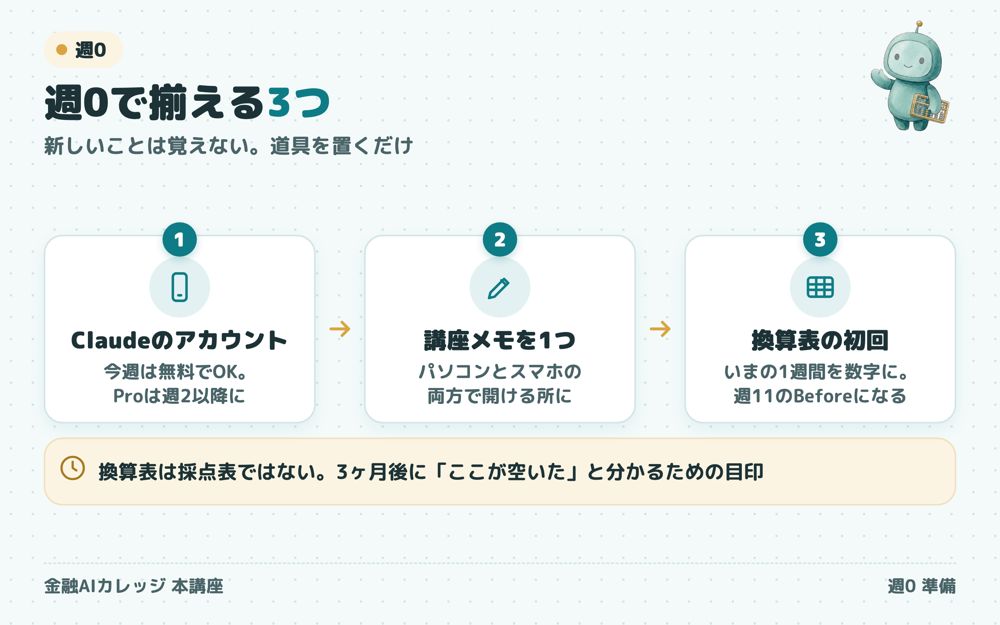

1月14日、最初の夜から
すぐ手が動くように
やることは3つ、約40分です。
新しいことは覚えません。
道具を置いておくだけです。

1月7日ごろまでに
開講の1週間前が目安です。
12月のうちでも、年明けでも大丈夫です。
ただ、3つ目の「換算表」だけは、ふだんどおりの1週間で数えたいので、年末年始の休みが明けてからがおすすめです。
全部できていなくても、1月14日に来てもらえれば大丈夫です。
終わったら、タップして印を
- ✓Claudeのアカウントを作るパソコンとスマホの両方で開けるように15分
- ✓最初のお願いを3つしてみる下の文を貼って送るだけ5分
- ✓（ChatGPTやGeminiをよく使ってきた人だけ）記憶をClaudeに引っ越す使っていない人は、印をつけて飛ばしてOK15分
- ✓「講座メモ」を1つ作る5分
- ✓換算表の6行を、講座メモに写して数字を書く15分
1Claudeのアカウントを作る
この講座では、Claude（クロード）というAIを使います。
講座で作る道具は、全部Claudeの画面で作ります。
- パソコンで、下のページを開きます
- 「Googleで続ける」を押すか、メールアドレスを入れて登録します
- メールに届いた確認を押して、名前などを入れれば、入力欄のある画面になります
- スマホにも「Claude」のアプリを入れて、同じアカウントで入っておきます

料金のプランは、まず無料で大丈夫です。講座の2週目あたりから、有料の「Pro」（月数千円）があると作業が止まりません。開講前に決めなくて大丈夫です。
最初のお願いを、3つしてみる
下の文を「コピー」して、Claudeの入力欄に貼って送るだけです。
3つ目は、Claudeから質問が返ってきます。思ったまま答えてみてください。
＋記憶をClaudeに引っ越す
いままでのAIが覚えている「あなたのこと」を、Claudeに移します。
ほとんど使っていない人は、飛ばして大丈夫です。
Claudeの左下の名前 →「設定」→「メモリ」を開き、「他のAIプロバイダーからメモリをインポート」の「インポートを開始」を押します。

次の画面が出ます。①の灰色の枠の中は英語の文ですが、そのままで大丈夫です。
- ①の「コピー」を押す
- ChatGPT（またはGemini）の新しいチャットに貼って送る
- 返ってきた答えを全部コピーして、②の枠に貼る
- ③「メモリに追加」を押す

2「講座メモ」を1つ作る
「講座メモ」という名前のメモを、1つだけ作ります。
置き場所は、パソコンとスマホの両方で開ける所です。Claudeで作業するのはパソコン、読み返すのはスマホのことが多いからです。
- iPhoneとMacの人：「メモ」のアプリ
- それ以外の人：自分宛てのLINEのKeepメモか、Googleドキュメント（迷ったらKeepメモがいちばん簡単です）
講座の3か月で作るもの（選ばれる理由、記事、プロフィール文など）は、全部ここにためていきます。
3換算表の6行に、数字を入れる
いまの1週間を、数字にしておきます。
この数字が、3か月後に「ここが空いた」と比べる元になります。
下の6行を講座メモに写して、数字を書きます。
| 項目 | 1週間あたり |
|---|---|
| 移動にかかっている時間 | ＿＿時間 |
| 資料や提案書を作っている時間 | ＿＿時間 |
| お礼・フォローの文を書いている時間 | ＿＿時間 |
| 面談の件数 | ＿＿件 |
| 面談のうち、次回につながった件数 | ＿＿件 |
| 新しい相談が入ってきた経路と件数（例：紹介2件・SNS0件） | ＿＿ |
正確でなくて大丈夫です。「だいたいこのくらい」で埋めてください。
1週間だと0になる行は、0のままでも、先月を思い出して「月◯件」と書いても構いません。
手帳を見ながらだと、10分ほどで終わります。
換算表は、自分を採点する表ではありません。3か月後に「ここが空いた」と分かるための目印です。
開講の前に、順番にお届けします
- 教材サイトへの招待（メールで届きます）
- 2期生だけの連絡の場への入り方
- 1月14日のZoomの入り方
届くまでは、このページの3つだけで十分です。
画面の写真を送ってください
うまく進まないときは、画面の写真を撮って、案内メールにそのまま返信してください。
LINEのほうが楽な人は、こちらからどうぞ。
https://lin.ee/7Pil31t僕か運営が返します。
金融AIカレッジ 森川 満章
本ページは情報提供です。所属会社の規程がある場合は、そちらが優先します。